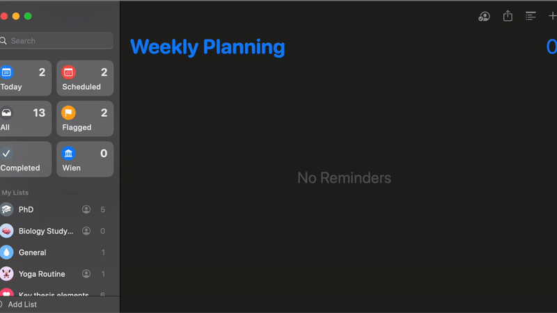

We introduce CrawlMacOS, a GPT-4-guided autonomous framework for systematically exploring and interacting with macOS applications via the accessibility API. Our system captures structured UI representations through full-desktop screenshots and rich interaction graphs, generating a benchmark dataset for training and evaluating general-purpose desktop agents.
CrawlMacOS autonomously launches apps, interprets accessible UI trees, interacts with interface elements based on natural language guidance, and logs resulting state transitions. This results in a dataset that includes screenshot-state pairs, UI metadata, and task execution traces—enabling novel research in macOS agent reasoning, planning, and perception.
The core component of our framework is a GPT-4 agent that autonomously explores macOS apps. The agent parses app UI hierarchies, generates and ranks possible actions using LLM reasoning, performs actions via the macOS accessibility API, and records the resulting UI transitions.
The CrawlMacOS dataset includes structured samples from real macOS apps:
This dataset enables benchmarking for desktop agents on macOS tasks involving multi-window coordination, memory, and real-world interfaces.